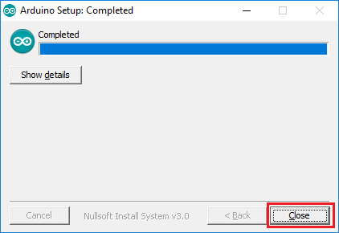

How to install วิธีการติดตั้งเครื่องมือสำหรับโปรแกรมใช้งานชุดสร้างระบบควบคุมฟาร์มฉลาด
Install Arduino IDE
Arduino IDE ย่อมาจาก Arduino integrated development environment คือ เครื่องมือสำหรับการเขียนโปรแกรมที่มีใช้งานได้กับอาดุยอิโน่ได้ทุกรุ่น
โดยภายในจะมีเครื่องมือที่จะใช้สำหรับติดต่ออาดุยอิโน่ เช่น การค้นหาอาดุยอิโน่ ที่ติดต่อกับเครื่องคอมพิวเตอร์
การเลือกรุ่นอาดุยอิโน่ที่ต่ออยู่เพื่อตรวจสอบว่าขนาดของโปรแกรมที่เขียน หรือไลบรารี่ต่างๆซับพอร์ตกับอาดุยอิโน่รุ่นนั้นๆหรือไม่
อีกทั้งยังมีโปรแกรมติดต่อผ่านซีเรียลโดยตรงสำหรับคอมพิวเตอร์ โปรแกรมอาดุยอิโน่ไอดีอี เป็นโปรแกรมโอเพ่นซอสสามารถนำไปใช้งานได้ฟรีๆ
อีกทั้งมีซอสโค้ดตัวอย่างให้ทดสอบกับเซ็นเซอร์ต่างๆ เช่น โปรแกรมไฟกระพริบ โปรแกรมวัดอุณภูมิ
ขั้นตอนการติดตั้ง Arduuino IDE
สามารถดาวน์โหลดได้ที่ : Download
1.ให้คลิกที่ Windows Installer, for Windows XP and up เพื่อโหลด ไฟล์ installer มาติดตั้งในระบบปฏิบัติการ windows
2.คลิกที่ JUST DOWNLOAD
3.บันทึกไฟล์ติดตั้งและดับเบิ้ลคลิกเพื่อติดตั้งไฟล์
4.ให้คลิก I Agree เพื่อยอมรับ และ คลิก Next เพื่อเลือก สร้าง shoctcut ไปยังหน้า Desktop ของเรา

5.เลือกพื้นที่สำหรับติดตั้งโปรแกรม Arduino IDE เริ่มต้นเราคลิก Install เลย

6.เมื่อเสร็จแล้วให้กด Close เสร็จสิ้นการติดตั้งโปรแกรม Arduino IDE
7.เราจะเห็น Arduino อยู่บน Desktop ของเราให้ดับเบิ้ลคลิกเพื่อเปิดโปรแกรมใช้งาน

8.เราปรากฏเป็นหน้าต่างเปล่า ที่มีฟังก์ชั่น setup และ loop
Download Library
1.ให้ไปที่ Download Library
จะเป็นเพจสำหรับดาวน์โหลดไลบรารี่ เพื่อไปใช้กับ พอร์ต I/O กับเซ็นเซอร์ และจอแสดงผล
วิธีการดาวน์โหลดเพียงคลิกลิงค์
แล้วเลือกดาวน์โหลดทั้งหมด จากนี้นให้รอบีบอัดไฟล์เป็น Output ไฟล์ให้
Install Library to Arduino IDE
เมื่อเราได้ทำการดาวน์โหลดไฟล์เสร็จแล้ว ให้ดับเบิ้ลคลิกที่ไฟล์